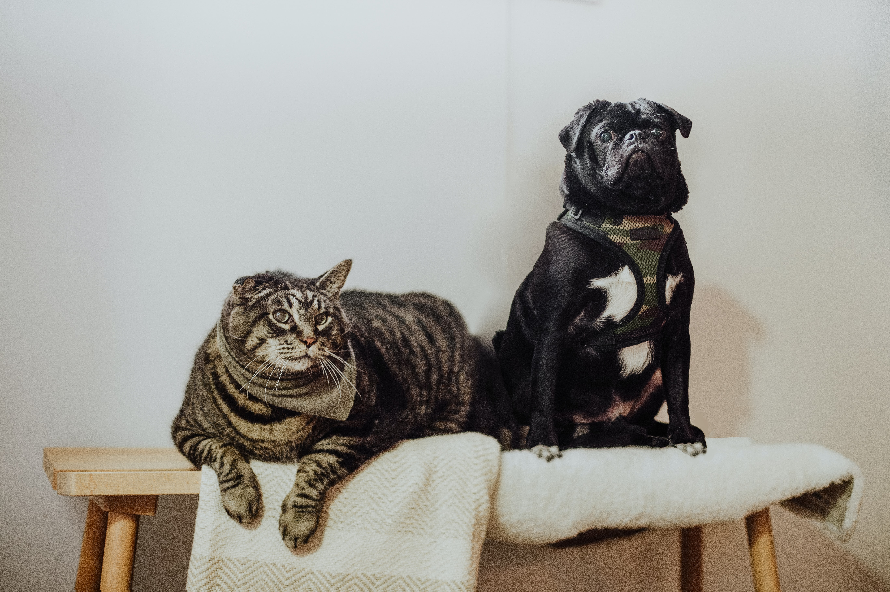

There are pros and cons in taking care of furry companions, of course, we love both canines and felines equally, but there are some key differences that mean they need to be cared for in different ways it don't mean one pet is better than the other.
In the early days cats were domesticated much later, that explains why they can come off as nonchalant in showing affection to their owners. Dogs have evolved from a social species and so they often benefit from some form of companionship.
Cats however have evolved from a solitary species and so with that they don't need to be friends with fellow cats. In fact, cats can often become stressed when forced to live with each other, unless they have a strong social connection.
It really depends on the person, couple or family that is going to take care of these pets. Everyone who is interested in having a dog or cat should consider their compatibility and the budget.
One thing to consider that dogs usually are the more active companions meaning they need to be walked almost everyday to keep their bones strong.
Owning a dog can also be a lot more expensive than owning a cat. Cats are lazy and they can sleep sixteen hours a day if they want too, so cats are more of a chilling companion.
So to summarize this, there is really no best pet in the world. Everyone can have their preference and besides cats and dogs aren't the only animals in the world you can have as a companion.